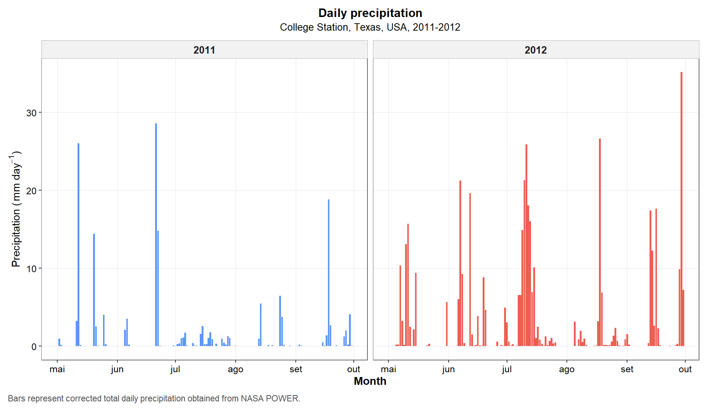
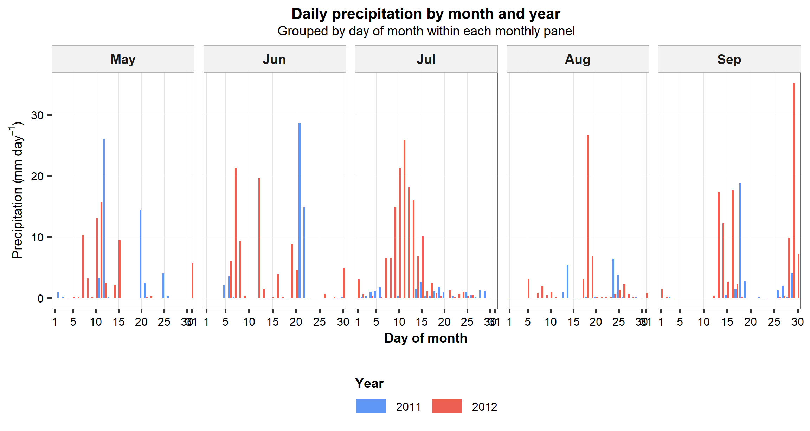
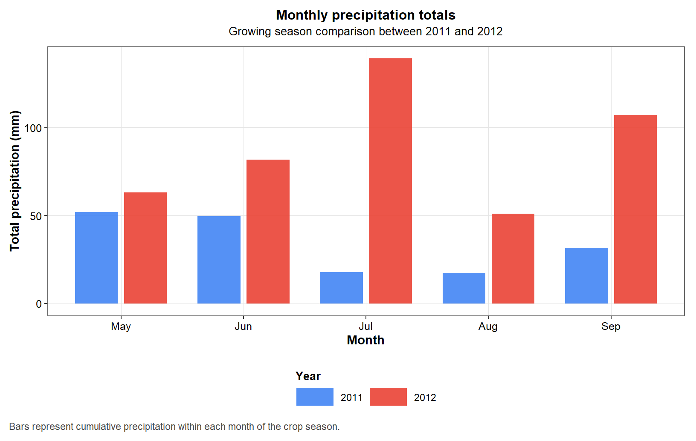
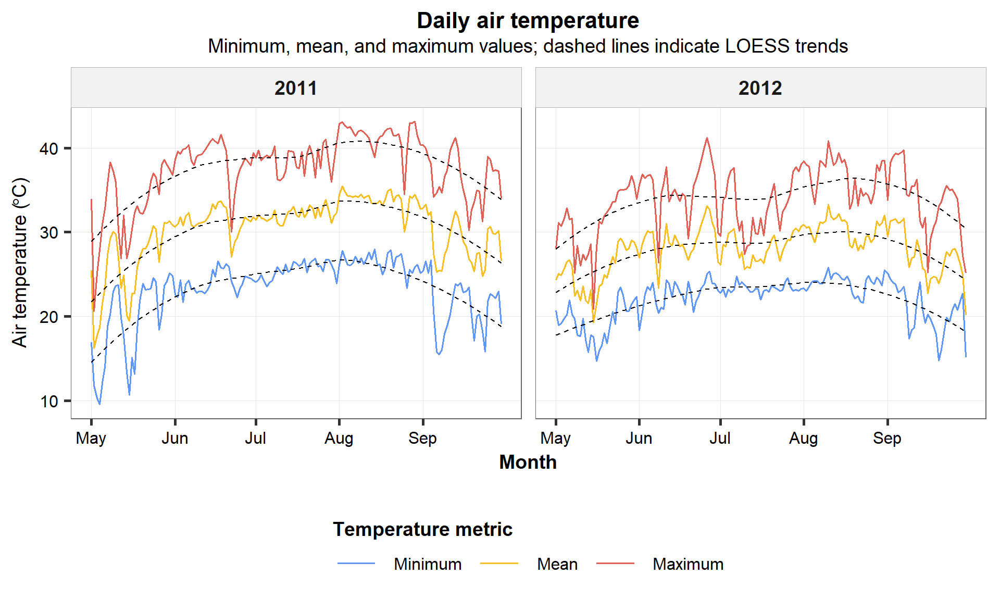
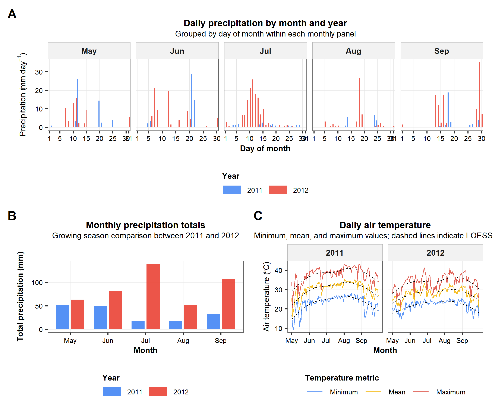
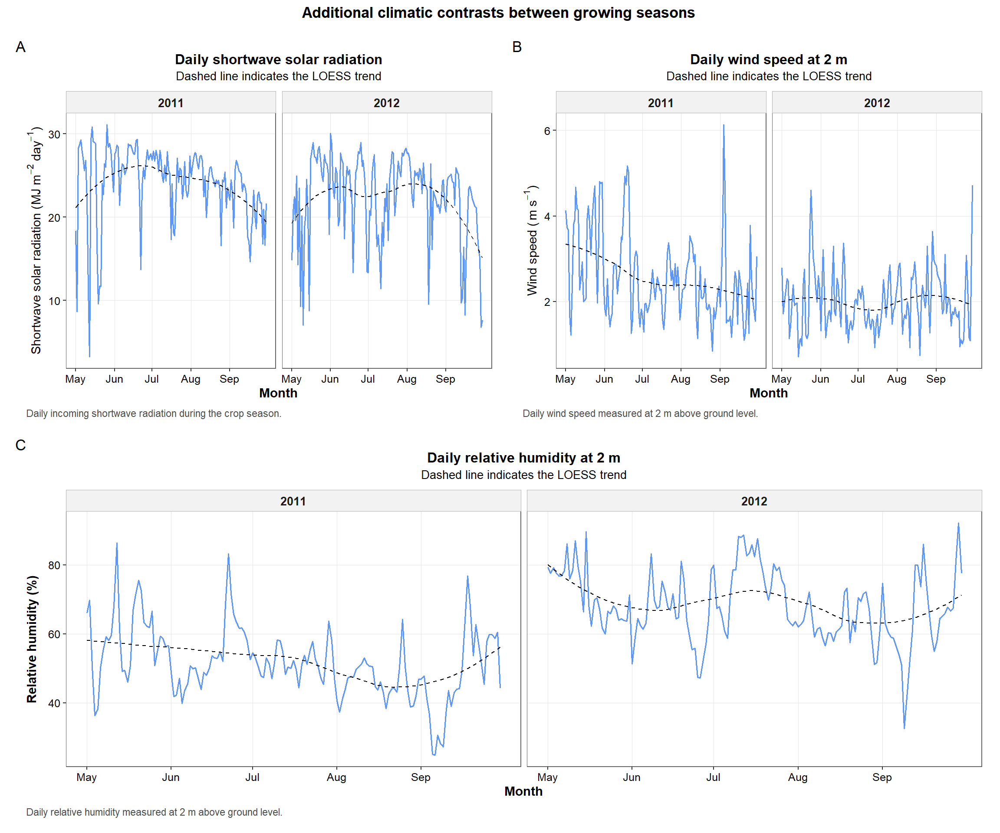

Last updated: 2026-03-27
Checks: 6 1
Knit directory:
Integrating-nir-genomic-kernel/
This reproducible R Markdown analysis was created with workflowr (version 1.7.2). The Checks tab describes the reproducibility checks that were applied when the results were created. The Past versions tab lists the development history.
The R Markdown file has unstaged changes. To know which version of
the R Markdown file created these results, you’ll want to first commit
it to the Git repo. If you’re still working on the analysis, you can
ignore this warning. When you’re finished, you can run
wflow_publish to commit the R Markdown file and build the
HTML.
Great job! The global environment was empty. Objects defined in the global environment can affect the analysis in your R Markdown file in unknown ways. For reproduciblity it’s best to always run the code in an empty environment.
The command set.seed(20250829) was run prior to running
the code in the R Markdown file. Setting a seed ensures that any results
that rely on randomness, e.g. subsampling or permutations, are
reproducible.
Great job! Recording the operating system, R version, and package versions is critical for reproducibility.
Nice! There were no cached chunks for this analysis, so you can be confident that you successfully produced the results during this run.
Great job! Using relative paths to the files within your workflowr project makes it easier to run your code on other machines.
Great! You are using Git for version control. Tracking code development and connecting the code version to the results is critical for reproducibility.
The results in this page were generated with repository version 2b82058. See the Past versions tab to see a history of the changes made to the R Markdown and HTML files.
Note that you need to be careful to ensure that all relevant files for
the analysis have been committed to Git prior to generating the results
(you can use wflow_publish or
wflow_git_commit). workflowr only checks the R Markdown
file, but you know if there are other scripts or data files that it
depends on. Below is the status of the Git repository when the results
were generated:
Ignored files:
Ignored: .Rhistory
Ignored: .Rproj.user/
Ignored: data/Article_documents/
Ignored: data/Maize-NIRS-GBS-main/
Ignored: output/Matrizes/ZEZE.rds
Ignored: output/adjust_models.rar
Ignored: output/climate_results/additional_climate_plots.tiff
Ignored: output/climate_results/combined_additional_climate_plots.tiff
Ignored: output/climate_results/combined_climate_plot.tiff
Ignored: output/cv-schemes.tiff
Ignored: output/results/
Ignored: output/variance_components/rep_1/
Ignored: output/variance_components/rep_10/
Ignored: output/variance_components/rep_11/
Ignored: output/variance_components/rep_12/
Ignored: output/variance_components/rep_13/
Ignored: output/variance_components/rep_14/
Ignored: output/variance_components/rep_15/
Ignored: output/variance_components/rep_16/
Ignored: output/variance_components/rep_17/
Ignored: output/variance_components/rep_18/
Ignored: output/variance_components/rep_19/
Ignored: output/variance_components/rep_2/
Ignored: output/variance_components/rep_20/
Ignored: output/variance_components/rep_3/
Ignored: output/variance_components/rep_4/
Ignored: output/variance_components/rep_5/
Ignored: output/variance_components/rep_6/
Ignored: output/variance_components/rep_7/
Ignored: output/variance_components/rep_8/
Ignored: output/variance_components/rep_9/
Ignored: output/variance_components/var_components_GY.tiff
Ignored: output/variance_components/var_components_KW.tiff
Ignored: output/variance_components/var_components_combined.tiff
Ignored: output/variance_components/variance_components_all.dat
Ignored: output/variance_components/variance_components_all.rds
Unstaged changes:
Modified: analysis/climate_data.Rmd
Note that any generated files, e.g. HTML, png, CSS, etc., are not included in this status report because it is ok for generated content to have uncommitted changes.
These are the previous versions of the repository in which changes were
made to the R Markdown (analysis/climate_data.Rmd) and HTML
(docs/climate_data.html) files. If you’ve configured a
remote Git repository (see ?wflow_git_remote), click on the
hyperlinks in the table below to view the files as they were in that
past version.
| File | Version | Author | Date | Message |
|---|---|---|---|---|
| Rmd | 2b82058 | WevertonGomesCosta | 2026-03-27 | update |
| html | 3573a52 | WevertonGomesCosta | 2026-03-27 | update |
| Rmd | 5b10ff7 | WevertonGomesCosta | 2026-02-24 | update |
| Rmd | 65d9bd8 | WevertonGomesCosta | 2025-11-04 | update climate_data .rmd and html |
| html | 65d9bd8 | WevertonGomesCosta | 2025-11-04 | update climate_data .rmd and html |
| Rmd | c758018 | WevertonGomesCosta | 2025-11-03 | update climate_data .rmd and .html |
| html | c758018 | WevertonGomesCosta | 2025-11-03 | update climate_data .rmd and .html |
| Rmd | 4128e08 | WevertonGomesCosta | 2025-11-03 | add climate and components variance scripts and html |
| html | 4128e08 | WevertonGomesCosta | 2025-11-03 | add climate and components variance scripts and html |
This tutorial presents the workflow used to obtain and process daily climatic data for the maize experiments conducted in College Station, Texas, during the 2011 and 2012 growing seasons.
The purpose of this script is not only to download daily weather records, but to convert those time series into a concise and biologically meaningful set of environmental covariates (ECs). These covariates summarize the macro-environmental conditions of each growing season and are later used as the W component in prediction models that combine genomic, environmental, and spectral information.
In practical terms, the workflow has four goals:
Study location: College Station, Texas, USA
Growing season window: May 1 to September 30
Study years: 2011 and 2012
Before starting the analysis, we load the packages required for data retrieval, data manipulation, visualization, and multi-panel figure assembly.
Each package has a clear role in the workflow:
nasapower: connects R to the NASA POWER database.tidyverse: supports data wrangling and plotting.lubridate: simplifies date conversion and date-based
operations.patchwork: combines multiple ggplot2
figures into publication-ready panels.ggthemes: provides the Google Docs discrete scales used
to standardize colors across figures.We also create the output directory at the beginning of the script. This avoids errors when saving figures and tables later in the analysis.
# Uncomment if installation is required
# install.packages(c("nasapower", "tidyverse", "lubridate", "patchwork", "ggthemes"))
library(nasapower)
library(tidyverse)
library(lubridate)
library(patchwork)
library(ggthemes)
if (!dir.exists("output")) dir.create("output")
if (!dir.exists("output/climate_results")) dir.create("output/climate_results", recursive = TRUE)In this section, we define the basic inputs for the NASA POWER query. These inputs determine where, when, and which climatic variables will be retrieved.
The geographic coordinates identify the experimental site. The start
and end dates define the crop season window to be analyzed. The vector
params lists the daily climatic variables required for
downstream summaries, such as precipitation, temperature, relative
humidity, solar radiation, and wind speed.
These variables were selected because they allow us to derive environmental descriptors with direct agronomic interpretation, such as accumulated precipitation, growing degree days, thermal stress, and vapor pressure deficit.
# Experimental site coordinates (College Station, TX)
coords_texas <- c(lon = -96.3344, lat = 30.6282)
# Growing season intervals
start_date_2011 <- "2011-05-01"
end_date_2011 <- "2011-09-30"
start_date_2012 <- "2012-05-01"
end_date_2012 <- "2012-09-30"
# NASA POWER variables
# PRECTOTCORR = Corrected total precipitation (mm/day)
# T2M_MAX, T2M_MIN = Maximum and minimum air temperature at 2 m (°C)
# RH2M = Relative humidity at 2 m (%)
# ALLSKY_SFC_SW_DWN= All-sky shortwave downward radiation (MJ m^-2 day^-1)
# WS2M = Wind speed at 2 m (m/s)
params <- c(
"PRECTOTCORR",
"T2M_MAX",
"T2M_MIN",
"RH2M",
"ALLSKY_SFC_SW_DWN",
"WS2M"
)This section performs the download of daily climatic data from NASA POWER.
We run one query for each growing season. This keeps the workflow transparent and makes it easier to confirm that each experimental year was retrieved correctly. After retrieval, the two annual tables will be merged into a single object for the remaining steps of the analysis.
The code below sends two independent requests to the NASA POWER
service, one for 2011 and one for 2012. A year identifier
is added immediately after retrieval so that the origin of each record
remains explicit throughout the workflow.
data_tx_2011 <- get_power(
community = "AG",
lonlat = coords_texas,
pars = params,
dates = c(start_date_2011, end_date_2011),
temporal_api = "DAILY"
) %>%
mutate(year = 2011)
data_tx_2012 <- get_power(
community = "AG",
lonlat = coords_texas,
pars = params,
dates = c(start_date_2012, end_date_2012),
temporal_api = "DAILY"
) %>%
mutate(year = 2012)Once both yearly tables are available, we merge them into a single dataset and convert the date column to a proper R date format. This step is essential because the original date is returned as a numeric string, and later visualizations depend on a valid date object.
We also save the raw daily dataset as a CSV file. This is an important reproducibility step because it preserves the exact version of the retrieved data used in the analysis.
texas_climate_data <- bind_rows(data_tx_2011, data_tx_2012) %>%
mutate(
date = ymd(YYYYMMDD),
year = factor(year, levels = c(2011, 2012))
)
knitr::kable(
head(texas_climate_data),
caption = "Sample of daily climatic data retrieved from NASA POWER."
)| LON | LAT | YEAR | MM | DD | DOY | YYYYMMDD | PRECTOTCORR | T2M_MAX | T2M_MIN | RH2M | ALLSKY_SFC_SW_DWN | WS2M | year | date |
|---|---|---|---|---|---|---|---|---|---|---|---|---|---|---|
| -96.3344 | 30.6282 | 2011 | 5 | 1 | 121 | 2011-05-01 | 0.00 | 33.95 | 16.93 | 66.05 | 18.35 | 4.13 | 2011 | 2011-05-01 |
| -96.3344 | 30.6282 | 2011 | 5 | 2 | 122 | 2011-05-02 | 0.99 | 20.62 | 11.77 | 69.83 | 8.63 | 3.73 | 2011 | 2011-05-02 |
| -96.3344 | 30.6282 | 2011 | 5 | 3 | 123 | 2011-05-03 | 0.14 | 25.13 | 10.30 | 50.50 | 28.29 | 3.67 | 2011 | 2011-05-03 |
| -96.3344 | 30.6282 | 2011 | 5 | 4 | 124 | 2011-05-04 | 0.00 | 27.91 | 9.52 | 36.35 | 28.73 | 1.69 | 2011 | 2011-05-04 |
| -96.3344 | 30.6282 | 2011 | 5 | 5 | 125 | 2011-05-05 | 0.01 | 30.96 | 12.09 | 38.21 | 29.31 | 1.22 | 2011 | 2011-05-05 |
| -96.3344 | 30.6282 | 2011 | 5 | 6 | 126 | 2011-05-06 | 0.00 | 32.76 | 13.95 | 50.22 | 28.19 | 2.39 | 2011 | 2011-05-06 |
write.csv(
texas_climate_data,
"output/climate_results/texas_climate_data_raw.csv",
row.names = FALSE
)Before summarizing the data into environmental covariates, it is good practice to inspect the daily series visually. This step serves two purposes.
First, it helps verify that the downloaded data are coherent and free from obvious structural problems. Second, it helps interpret the climatic contrast between the years under study, which is important for the biological discussion of the experiments.
To make the figures suitable for a scientific article, we define a common visual style and standardize axis titles, units, and panel formatting.
The objects created below are used repeatedly across the figures. The
custom theme improves readability, while the month labels ensure
consistent calendar formatting across panels. We also define helper
scales based on the Google Docs palette (scale_*_gdocs) so
that all figures share the same discrete color standard throughout the
tutorial.
theme_article <- function() {
theme_bw(base_size = 11) +
theme(
panel.grid.minor = element_blank(),
panel.grid.major = element_line(color = "grey90", linewidth = 0.25),
panel.border = element_rect(color = "grey40", linewidth = 0.4),
strip.background = element_rect(fill = "grey95", color = "grey70", linewidth = 0.3),
strip.text = element_text(face = "bold", size = 10),
axis.title = element_text(face = "bold", size = 11),
axis.text = element_text(size = 9.5, color = "black"),
plot.title = element_text(face = "bold", size = 12, hjust = 0.5, margin = margin(b = 4)),
plot.subtitle = element_text(size = 10, hjust = 0.5, margin = margin(b = 8)),
plot.caption = element_text(size = 8.5, hjust = 0, color = "grey30", margin = margin(t = 8)),
plot.caption.position = "plot",
legend.position = "bottom",
legend.justification = "center",
legend.direction = "horizontal",
legend.title = element_text(face = "bold", size = 10),
legend.text = element_text(size = 9),
legend.key.width = grid::unit(1.2, "cm"),
legend.box.margin = margin(t = 4),
plot.margin = margin(8, 10, 8, 8)
)
}
scale_fill_article <- function(...) {
ggthemes::scale_fill_gdocs(...)
}
scale_color_article <- function(...) {
ggthemes::scale_color_gdocs(...)
}
scale_color_temperature_article <- function(...) {
ggplot2::scale_color_manual(
values = c(
"Minimum" = "#4285F4",
"Mean" = "#F4B400",
"Maximum" = "#DB4437"
),
...
)
}
guide_article <- guide_legend(
title.position = "top",
nrow = 1,
byrow = TRUE
)
month_levels <- 5:9
month_labels <- month.abb[month_levels]
month_breaks_fn <- function(x) {
seq.Date(
from = floor_date(min(x, na.rm = TRUE), unit = "month"),
to = floor_date(max(x, na.rm = TRUE), unit = "month"),
by = "1 month"
)
}
month_labels_fn <- scales::label_date(format = "%b")
daily_data_with_parts <- texas_climate_data %>%
mutate(
Year = factor(year(date), levels = c(2011, 2012)),
Month = factor(month(date), levels = month_levels, labels = month_labels),
Day_of_month = factor(mday(date))
)This first figure provides a direct view of daily rainfall over time. It is useful for identifying dry periods, rainfall concentration, and broad differences between the two years.
p_precip_daily <- ggplot(
texas_climate_data,
aes(x = date, y = PRECTOTCORR, fill = year)
) +
geom_col(alpha = 0.85, show.legend = FALSE) +
facet_wrap(~ year, scales = "free_x") +
labs(
title = "Daily precipitation",
subtitle = "College Station, Texas, USA, 2011-2012",
x = "Month",
y = expression("Precipitation (" * mm ~ day^{-1} * ")"),
caption = "Bars represent corrected total daily precipitation obtained from NASA POWER."
) +
scale_x_date(breaks = month_breaks_fn, labels = month_labels_fn) +
scale_fill_article(limits = c("2011", "2012"), guide = guide_article) +
theme_article()
p_precip_daily
Figure 1. Daily precipitation across the 2011 and 2012 maize growing seasons in College Station, Texas. Bars represent corrected daily precipitation obtained from NASA POWER.
The next figure reorganizes the same rainfall information in a way that facilitates within-season comparison. Instead of plotting only the chronological series, we compare days of the month across the two years inside each monthly panel.
This layout is especially helpful when the goal is to see whether one season was systematically drier or wetter during specific periods of crop development.
p1 <- ggplot(daily_data_with_parts, aes(x = Day_of_month, y = PRECTOTCORR, fill = Year)) +
geom_col(position = position_dodge(width = 0.85), alpha = 0.85, width = 0.8) +
facet_wrap(~ Month, scales = "free_x", ncol = 5) +
labs(
title = "Daily precipitation by month and year",
subtitle = "Grouped by day of month within each monthly panel",
x = "Day of month",
y = expression("Precipitation (" * mm ~ day^{-1} * ")"),
fill = "Year",
caption = "This arrangement facilitates within-season comparison of rainfall patterns between years."
) +
scale_x_discrete(breaks = c("1", "5", "10", "15", "20", "25", "30", "31")) +
scale_fill_article(limits = c("2011", "2012"), guide = guide_article) +
theme_article()
p1
Figure 2. Daily precipitation arranged by day of month within each month to facilitate between-year comparison during the crop season.
Daily precipitation is informative, but monthly totals provide a simpler seasonal summary. This figure aggregates the daily series and allows a cleaner comparison of cumulative water input between years and months.
monthly_precip <- texas_climate_data %>%
mutate(
year = factor(year(date), levels = c(2011, 2012)),
month = factor(month(date), levels = month_levels, labels = month_labels)
) %>%
group_by(year, month) %>%
summarise(total_precipitation = sum(PRECTOTCORR, na.rm = TRUE), .groups = "drop")
p2 <- ggplot(monthly_precip, aes(x = month, y = total_precipitation, fill = year)) +
geom_col(position = position_dodge(width = 0.8), width = 0.7, alpha = 0.9) +
labs(
title = "Monthly precipitation totals",
subtitle = "Growing season comparison between 2011 and 2012",
x = "Month",
y = "Total precipitation (mm)",
fill = "Year",
caption = "Bars represent cumulative precipitation within each month of the crop season."
) +
scale_fill_article(limits = c("2011", "2012"), guide = guide_article) +
theme_article()
p2
Figure 3. Monthly precipitation totals during the maize growing seasons of 2011 and 2012 in College Station, Texas.
Temperature is another core descriptor of crop environment. In this figure, we compare minimum, mean, and maximum daily temperature profiles across the two seasons.
The dashed smoothing lines do not replace the original data. Their role is only to help visualize the general seasonal trends for each temperature metric.
temperature_data <- texas_climate_data %>%
mutate(T2M_MEAN = (T2M_MAX + T2M_MIN) / 2) %>%
pivot_longer(
cols = c(T2M_MIN, T2M_MEAN, T2M_MAX),
names_to = "Temperature_metric",
values_to = "Temperature"
) %>%
mutate(
Temperature_metric = factor(
Temperature_metric,
levels = c("T2M_MIN", "T2M_MEAN", "T2M_MAX"),
labels = c("Minimum", "Mean", "Maximum")
)
)
p3 <- ggplot(temperature_data, aes(x = date, y = Temperature, color = Temperature_metric)) +
geom_line(linewidth = 0.55, alpha = 0.85) +
geom_smooth(
aes(group = Temperature_metric),
method = "loess",
se = FALSE,
linetype = "dashed",
color = "black",
linewidth = 0.5,
show.legend = FALSE
) +
facet_wrap(~ year, scales = "free_x") +
labs(
title = "Daily air temperature",
subtitle = "Minimum, mean, and maximum values; dashed lines indicate LOESS trends",
x = "Month",
y = expression("Air temperature (" * degree * "C)"),
color = "Temperature metric",
caption = "Dashed LOESS curves are included only to summarize seasonal trajectories for each temperature metric."
) +
scale_x_date(breaks = month_breaks_fn, labels = month_labels_fn) +
scale_color_temperature_article(limits = c("Minimum", "Mean", "Maximum"), guide = guide_article) +
theme_article()
p3
Figure 4. Daily minimum, mean, and maximum air temperature during the 2011 and 2012 maize growing seasons. Dashed lines indicate LOESS trends used only to aid visual interpretation.
After creating the main precipitation and temperature plots, we combine them into a single multi-panel figure. This is useful when the final output is intended for reports, manuscripts, or supplementary material.
The figure is also exported as a high-resolution TIFF file, which is a common requirement for journal submission.
main_layout <- "
AA
BC
"
combined_plot <- patchwork::wrap_plots(
A = p1,
B = p2,
C = p3,
design = main_layout
) +
patchwork::plot_annotation(
tag_levels = "A",
title = "Main climatic contrasts between growing seasons",
theme = theme(
plot.title = element_text(face = "bold", size = 13, hjust = 0.5, margin = margin(b = 8))
)
)
print(combined_plot)
Figure 5. Multi-panel summary of the main climatic contrasts between years, including daily precipitation by month, monthly precipitation totals, and daily air temperature profiles.
ggsave(
filename = "output/climate_results/combined_climate_plot.tiff",
plot = combined_plot,
width = 14,
height = 10,
dpi = 300,
compression = "lzw",
bg = "white"
)In addition to precipitation and temperature, the script also examines solar radiation, wind speed, and relative humidity. These variables are important because they help describe evaporative demand, atmospheric dryness, and energy availability during the crop cycle.
p4 <- ggplot(
texas_climate_data,
aes(x = date, y = ALLSKY_SFC_SW_DWN, color = "Solar radiation")
) +
geom_line(alpha = 0.85, linewidth = 0.55, show.legend = FALSE) +
geom_smooth(method = "loess", se = FALSE, linetype = "dashed", color = "black", linewidth = 0.5) +
facet_wrap(~ year, scales = "free_x") +
labs(
title = "Daily shortwave solar radiation",
subtitle = "Dashed line indicates the LOESS trend",
x = "Month",
y = expression("Shortwave solar radiation (" * MJ ~ m^{-2} ~ day^{-1} * ")"),
caption = "Daily incoming shortwave radiation during the crop season."
) +
scale_x_date(breaks = month_breaks_fn, labels = month_labels_fn) +
scale_color_article(limits = "Solar radiation", guide = "none") +
theme_article()
p5 <- ggplot(
texas_climate_data,
aes(x = date, y = WS2M, color = "Wind speed")
) +
geom_line(alpha = 0.85, linewidth = 0.55, show.legend = FALSE) +
geom_smooth(method = "loess", se = FALSE, linetype = "dashed", color = "black", linewidth = 0.5) +
facet_wrap(~ year, scales = "free_x") +
labs(
title = "Daily wind speed at 2 m",
subtitle = "Dashed line indicates the LOESS trend",
x = "Month",
y = expression("Wind speed (" * m ~ s^{-1} * ")"),
caption = "Daily wind speed measured at 2 m above ground level."
) +
scale_x_date(breaks = month_breaks_fn, labels = month_labels_fn) +
scale_color_article(limits = "Wind speed", guide = "none") +
theme_article()
p6 <- ggplot(
texas_climate_data,
aes(x = date, y = RH2M, color = "Relative humidity")
) +
geom_line(alpha = 0.85, linewidth = 0.55, show.legend = FALSE) +
geom_smooth(method = "loess", se = FALSE, linetype = "dashed", color = "black", linewidth = 0.5) +
facet_wrap(~ year, scales = "free_x") +
labs(
title = "Daily relative humidity at 2 m",
subtitle = "Dashed line indicates the LOESS trend",
x = "Month",
y = "Relative humidity (%)",
caption = "Daily relative humidity measured at 2 m above ground level."
) +
scale_x_date(breaks = month_breaks_fn, labels = month_labels_fn) +
scale_color_article(limits = "Relative humidity", guide = "none") +
theme_article()As in the previous subsection, we combine the individual plots into a
single figure. The layout was built using
patchwork::wrap_plots(), which avoids the composition error
generated when the patchwork operators are not correctly recognized
during rendering.
additional_layout <- "
AB
CC
"
combined_additional_plots <- patchwork::wrap_plots(
A = p4,
B = p5,
C = p6,
design = additional_layout
) +
patchwork::plot_annotation(
tag_levels = "A",
title = "Additional climatic contrasts between growing seasons",
theme = theme(
plot.title = element_text(face = "bold", size = 13, hjust = 0.5, margin = margin(b = 8))
)
)
print(combined_additional_plots)
Figure 7. Multi-panel summary of additional climatic variables across years, including shortwave solar radiation, wind speed, and relative humidity.
ggsave(
filename = "output/climate_results/combined_additional_climate_plots.tiff",
plot = combined_additional_plots,
width = 14,
height = 10,
dpi = 300,
compression = "lzw",
bg = "white"
)The next step transforms daily climatic records into annual summary variables. This is the most important analytical transition in the script because it converts a raw time series into features that can be used in downstream prediction models.
These summaries are designed to capture biologically relevant aspects of each environment, including thermal accumulation, water availability, atmospheric dryness, and stress frequency.
Some environmental covariates depend on quantities that are not directly provided by NASA POWER. For this reason, we first compute intermediate daily variables such as growing degree days (GDD), daily thermal amplitude, average daily temperature, saturation vapor pressure, actual vapor pressure, and vapor pressure deficit (VPD).
These intermediate variables are calculated day by day and then summarized at the annual level in the next subsection.
texas_climate_data <- texas_climate_data %>%
mutate(
T_base = 10,
T_upper = 30,
T_eff_min = if_else(T2M_MIN < T_base, T_base, T2M_MIN),
T_eff_max = if_else(T2M_MAX > T_upper, T_upper, T2M_MAX),
T_avg_eff = (T_eff_min + T_eff_max) / 2,
GDD = T_avg_eff - T_base,
DTR = T2M_MAX - T2M_MIN,
T_AVG_DAILY = (T2M_MAX + T2M_MIN) / 2,
# Tetens equation, resulting in kPa
SAT_VAP_PRES = 0.6108 * exp((17.27 * T_AVG_DAILY) / (T_AVG_DAILY + 237.3)),
ACT_VAP_PRES = SAT_VAP_PRES * (RH2M / 100),
VPD_DAILY = SAT_VAP_PRES - ACT_VAP_PRES
)
environmental_covariates <- texas_climate_data %>%
mutate(year_numeric = as.integer(as.character(year))) %>%
group_by(year_numeric) %>%
summarise(
TMAX_AVG = mean(T2M_MAX, na.rm = TRUE),
TMIN_AVG = mean(T2M_MIN, na.rm = TRUE),
GDD_CUM = sum(GDD, na.rm = TRUE),
HEAT_STRESS_DAYS = sum(T2M_MAX > 35, na.rm = TRUE),
PRECTOT = sum(PRECTOTCORR, na.rm = TRUE),
DRY_DAYS = sum(PRECTOTCORR == 0, na.rm = TRUE),
RH_AVG = mean(RH2M, na.rm = TRUE),
WS2M_AVG = mean(WS2M, na.rm = TRUE),
RAD_CUM = sum(ALLSKY_SFC_SW_DWN, na.rm = TRUE),
T_AVG = mean(T_AVG_DAILY, na.rm = TRUE),
DTR_AVG = mean(DTR, na.rm = TRUE),
COLD_STRESS_DAYS = sum(T2M_MIN < 10, na.rm = TRUE),
RAINY_DAYS = sum(PRECTOTCORR > 0, na.rm = TRUE),
PREC_INTENSITY = if_else(RAINY_DAYS > 0, PRECTOT / RAINY_DAYS, 0),
LOW_RH_DAYS = sum(RH2M < 30, na.rm = TRUE),
VPD_AVG = mean(VPD_DAILY, na.rm = TRUE),
VPD_STRESS_DAYS = sum(VPD_DAILY > 1.5, na.rm = TRUE),
.groups = "drop"
) %>%
rename(year = year_numeric)
# Optional expanded table: daily weather data plus annual ECs
ecs_expanded <- texas_climate_data %>%
mutate(year = as.integer(as.character(year))) %>%
left_join(environmental_covariates, by = "year")
knitr::kable(
environmental_covariates,
caption = "Annual environmental covariates derived from NASA POWER data."
)| year | TMAX_AVG | TMIN_AVG | GDD_CUM | HEAT_STRESS_DAYS | PRECTOT | DRY_DAYS | RH_AVG | WS2M_AVG | RAD_CUM | T_AVG | DTR_AVG | COLD_STRESS_DAYS | RAINY_DAYS | PREC_INTENSITY | LOW_RH_DAYS | VPD_AVG | VPD_STRESS_DAYS |
|---|---|---|---|---|---|---|---|---|---|---|---|---|---|---|---|---|---|
| 2011 | 37.65373 | 23.22837 | 2530.040 | 120 | 168.36 | 74 | 51.71516 | 2.58549 | 3687.10 | 30.44105 | 14.42536 | 1 | 79 | 2.131139 | 4 | 2.159130 | 125 |
| 2012 | 33.97667 | 21.97902 | 2417.415 | 64 | 442.25 | 49 | 68.11471 | 2.02085 | 3414.31 | 27.97784 | 11.99765 | 0 | 104 | 4.252404 | 0 | 1.251411 | 50 |
The final table contains one row per year and several climatic descriptors.
For example:
GDD_CUM summarizes thermal accumulation during the crop
cycle.PRECTOT summarizes total water input from
rainfall.DRY_DAYS and HEAT_STRESS_DAYS quantify
stress frequency.VPD_AVG and VPD_STRESS_DAYS capture
atmospheric dryness.RAD_CUM summarizes the seasonal solar energy available
to the crop.This table is the practical output that connects the climate tutorial to the predictive modeling stage of the project and to the subsequent construction of the environmental kernel.
The last section stores the processed files generated by the tutorial. Saving the outputs explicitly is important because it separates data acquisition from downstream modeling, making the workflow easier to reproduce and audit.
Three files are exported:
texas_climate_data_raw.csv: raw daily climatic
records.environmental_covariates.csv: one row per year with the
derived annual summaries.environmental_covariates_expanded.csv: daily records
linked to the annual environmental summaries.write.csv(
environmental_covariates,
"output/climate_results/environmental_covariates.csv",
row.names = FALSE
)
write.csv(
ecs_expanded,
"output/climate_results/environmental_covariates_expanded.csv",
row.names = FALSE
)
cat("Climate files successfully saved in 'output/climate_results/'.")Climate files successfully saved in 'output/climate_results/'.This tutorial establishes a reproducible climatic preprocessing pipeline for the study. Starting from daily weather observations, it produces a curated set of environmental covariates and article-ready figures.
In the broader workflow of the project, these outputs are not the final goal. They are intermediate scientific objects that support the construction of the environmental component (W) and the environmental kernel used in later genomic prediction models.
sessionInfo()R version 4.5.1 (2025-06-13 ucrt)
Platform: x86_64-w64-mingw32/x64
Running under: Windows 11 x64 (build 26200)
Matrix products: default
LAPACK version 3.12.1
locale:
[1] LC_COLLATE=Portuguese_Brazil.utf8 LC_CTYPE=Portuguese_Brazil.utf8
[3] LC_MONETARY=Portuguese_Brazil.utf8 LC_NUMERIC=C
[5] LC_TIME=Portuguese_Brazil.utf8
time zone: America/Sao_Paulo
tzcode source: internal
attached base packages:
[1] stats graphics grDevices utils datasets methods base
other attached packages:
[1] ggthemes_5.2.0 patchwork_1.3.2 lubridate_1.9.4 forcats_1.0.1
[5] stringr_1.6.0 dplyr_1.2.0 purrr_1.2.1 readr_2.2.0
[9] tidyr_1.3.2 tibble_3.3.1 ggplot2_4.0.2 tidyverse_2.0.0
[13] nasapower_4.2.5
loaded via a namespace (and not attached):
[1] gtable_0.3.6 xfun_0.54 bslib_0.9.0 lattice_0.22-7
[5] tzdb_0.5.0 vctrs_0.7.1 tools_4.5.1 generics_0.1.4
[9] curl_7.0.0 parallel_4.5.1 pkgconfig_2.0.3 Matrix_1.7-4
[13] RColorBrewer_1.1-3 S7_0.2.1 lifecycle_1.0.5 compiler_4.5.1
[17] farver_2.1.2 git2r_0.36.2 textshaping_1.0.4 httpuv_1.6.16
[21] htmltools_0.5.9 sass_0.4.10 yaml_2.3.12 later_1.4.4
[25] pillar_1.11.1 crayon_1.5.3 jquerylib_0.1.4 whisker_0.4.1
[29] cachem_1.1.0 nlme_3.1-168 tidyselect_1.2.1 digest_0.6.39
[33] stringi_1.8.7 splines_4.5.1 labeling_0.4.3 rprojroot_2.1.1
[37] fastmap_1.2.0 grid_4.5.1 cli_3.6.5 magrittr_2.0.4
[41] triebeard_0.4.1 crul_1.6.0 withr_3.0.2 scales_1.4.0
[45] promises_1.5.0 bit64_4.6.0-1 timechange_0.3.0 rmarkdown_2.30
[49] bit_4.6.0 otel_0.2.0 workflowr_1.7.2 ragg_1.5.0
[53] hms_1.1.4 evaluate_1.0.5 knitr_1.50 mgcv_1.9-4
[57] rlang_1.1.7 urltools_1.7.3.1 Rcpp_1.1.1 glue_1.8.0
[61] httpcode_0.3.0 rstudioapi_0.17.1 vroom_1.7.0 jsonlite_2.0.0
[65] R6_2.6.1 systemfonts_1.3.1 fs_1.6.6 Weverton Gomes da Costa, Postdoctoral Researcher, Department of Statistics - Universidade Federal de Viçosa, wevertonufv@gmail.com↩︎